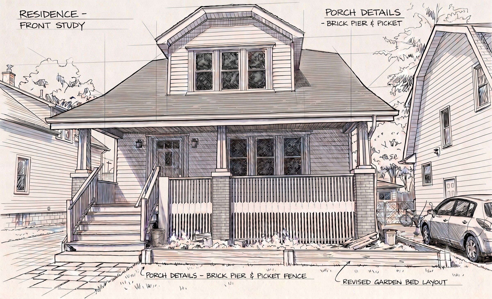
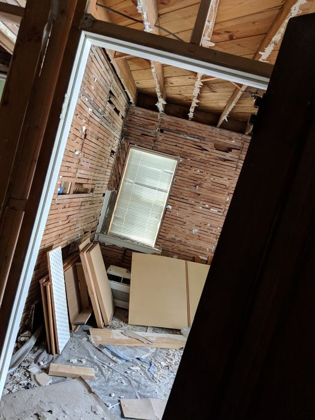
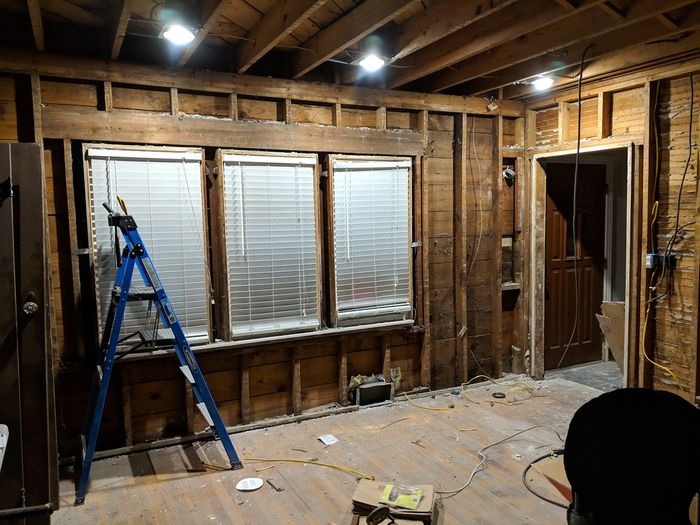
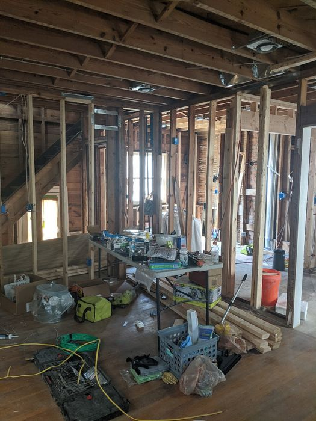
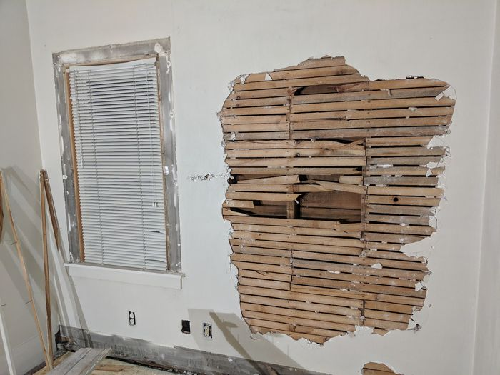
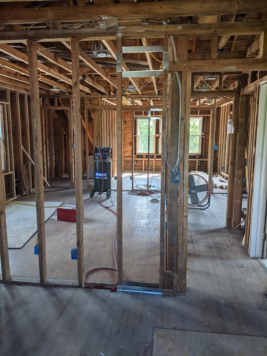
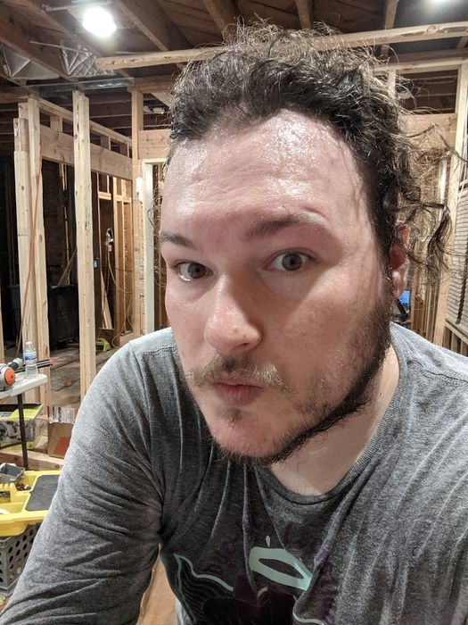
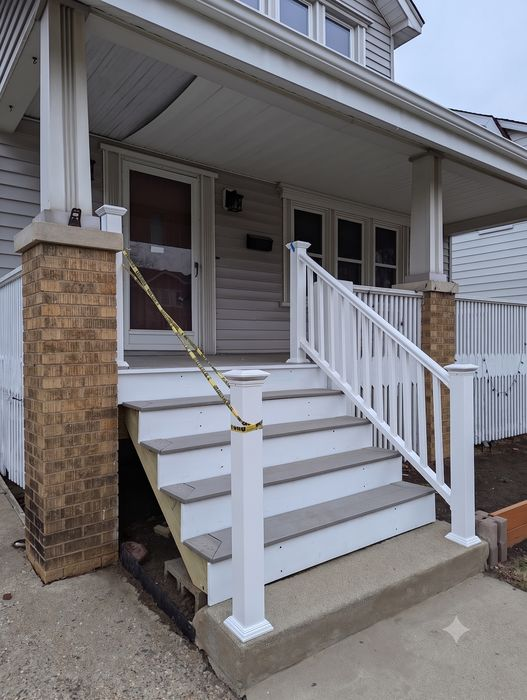
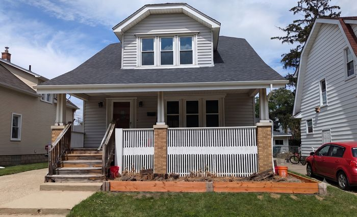

Outside the Day Job
Rebuilding my 1927 bungalow.
The Renovation
A few years ago I bought a 1927 bungalow in Dearborn, Michigan and started a full gut renovation — stripping the interior back to the studs, pulling out the old plumbing and wiring, and tearing down every wall of original plaster and lath.
Along the way I taught myself how to run electrical wire and read the building code closely enough to pass inspection — panel to outlet, load calculations and all. I've also rebuilt the front porch stairs from scratch and redone the garden bed out front.
This is a running log of the work, from the first swing of the sledgehammer to the pieces that are finally starting to look finished — demo, framing, electrical, and the slower work of putting it all back together, shot along the way and not staged for it.







